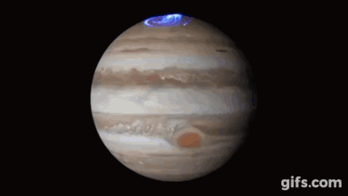
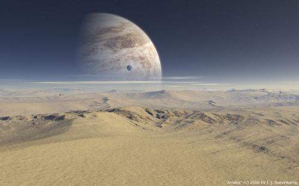
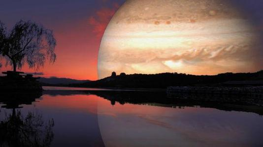
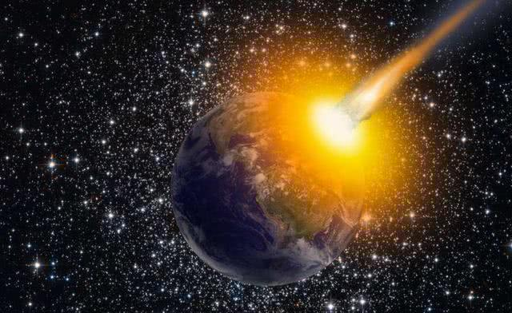
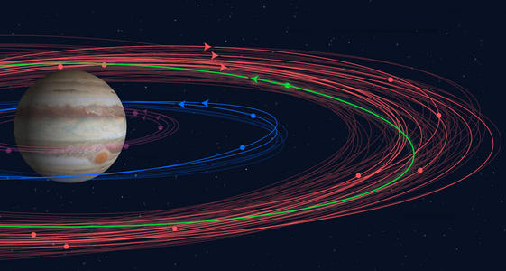
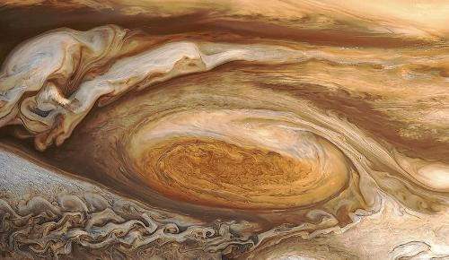
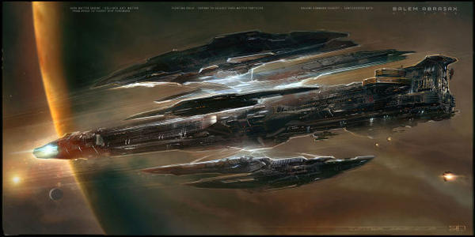
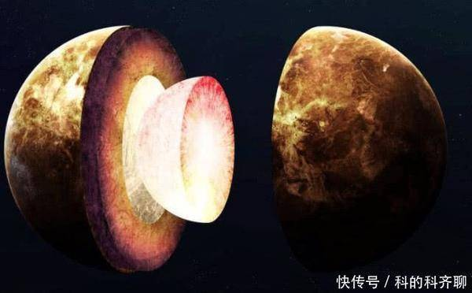
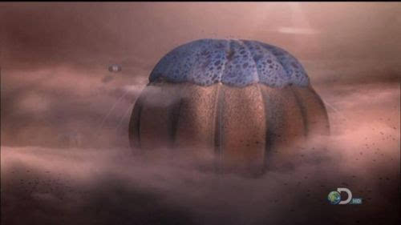

木星相关知识
木星（英语：Jupiter，拉丁语：Iovi，符号：♃）是太阳系八大行星中体积最大、自转最快的行星，距离太阳第五远的行星。它的质量为太阳的千分之一，是太阳系中其它七大行星质量总和的2.5倍。由于木星与土星、天王星、海王星皆为气体行星，因此四者又合称类木行星（木星和土星合称气态巨行星）。木星是一个气态巨行星，占所有太阳系行星质量的70%，主要由氢组成，占其总质量的75%，其次为氦，占总质量的25%，岩核则含有其他较重的元素。人类所看到的通常是大气中云层的顶端，压强比1个大气压略高。
木星由于自转快速（自转一周为10个小时）而呈现扁球体（赤道附近有略微但可见的凸起），号称“灵活的胖子”。外大气层明确依纬度分为多个带域，各带域相接的边际容易出现乱流和风暴，最显著的例子是大红斑。环绕着行星的是松弱的行星环系统和强大的磁层（木星磁场十分强大，其背对太阳一面的磁场甚至延伸至土星轨道）。目前，木星的周围发现了79颗卫星。

2018年2月，美国航空航天局（NASA）公布了由朱诺号卫星拍摄到的一组木星南极的图像，醒目的蓝色漩涡以华丽的图案扭曲变幻，创造了令人惊叹的奇观
结构组成
木星是一个巨大的液态氢星体。随着深度的增加，在距离表面至少5000千米深处，液态氢在高压和高温环境下形成。据推测，木星的中心是一个含硅酸盐和铁等物质组成的核区，物质组成与密度呈连续过渡。
木星是四个气体行星（又称类木行星）中的一个：即不以固体物质为主要组成的行星，它是太阳系中体积最大的行星，赤道直径为142984千米。木星的密度为1.326g/cm³，在气体行星中排行第二，但远低于太阳系中四个类地行星。
大气组成
木星有着太阳系内最大的行星大气层，跨越的高度超过5000km（3107mi）。由于木星没有固体的表面，它的大气层基础通常被认为是大气压力等于1MPa（10bar），或十倍于地球表面压力之处。

云层
木星的大气组成中，按分子数量来看，81%是氢，18%是氦，按质量则分别是75%和24%。只有约1%左右的其他气体，其中包括甲烷、水蒸气、氨气等。这与太阳系的前身——原始太阳星云的组成相近，但木星中较重元素的比例却比原始太阳星云多数倍。同为气体行星的土星也是类似的组成，但天王星及海王星中的氢和氦就少得多。由于木星有较强的内部能源，致使其赤道与两极温差不大，不超过3℃，因此木星上南北风很小，主要是东西风，最大风速达130～150米/秒。木星大气中充满了稠密活跃的云系。各种颜色的云层像波浪一样在激烈翻腾着。在木星大气中还观测到有闪电和雷暴。由于木星的快速自转，因此能在它的大气中观测到与赤道平行的、明暗交替的带纹其中的亮带是向上运动的区域，暗纹则是较低和较暗的云
木星表面有红、褐、白等五彩缤纷的条纹图案，可以推测木星大气中的风向是平行于赤道方向，因区域的不同而交互吹着西风及东风，是木星大气的一项明显特征。大气中含有极微的甲烷、乙炔之类的有机成分，而且有打雷现象生成有机物的概率相当大。
大红斑与涡旋
木星的大红斑位于南纬23°处，长2万公里，宽1.1万公里。探测器发现，大红斑是一团激烈上升的气流，呈深褐色。这个彩色的气旋以逆时针方向转动。在大红斑中心部分有个小颗粒，是大红斑的核，其大小约几百公里。这个核在周围的反时针漩涡运动中维持不动。大红斑的寿命很长，可维持几百年或更久。早在1665年，意大利天文学家卡西尼就发现了它。大红斑的豔丽红色令人印象深刻，颜色似乎来自红磷。
风暴通常都发生在巨行星大气层的湍流内，木星也有白色和棕色的鹅蛋形风暴，但较小的那些风暴通常都不会被命名。白色的鹅蛋倾向于包含大气层上层，相对较低温的云。棕色鹅蛋形是较温暖和位于普通云层。这种风暴持续的时间可以只有几个小时，也可以长达数个世纪。
卫星家族
木星运动正逐渐地变缓。同样相同的引潮力也改变了卫星的轨道，使它们慢慢地逐渐远离木星。木卫一、木卫二、木卫三由引潮力影响而使公转共动关系固定为1：2：4，并共同变化。木卫四也是这其中一个部分，在未来的数亿年里，木卫四也将被锁定，以木卫三的两倍公转周期，以木卫一的八倍来运行。木星的卫星由宙斯一生中所接触过的人来命名（大多是他的情人）
木卫可分为三群：最靠近木星的一群——木卫十六、木卫十四、木卫五、木卫十五和四颗伽利略卫星等8颗轨道偏心率都小于0.01，顺行，属于规则卫星；其余均属不规则卫星。离木星稍远的一群卫星——木卫十三、木卫六、木卫十及木卫七，偏心离为0.11～0.21，顺行。离木星最远的一群——木卫十二、木卫十一、木卫八及木卫九，偏心率0.17～0.38、逆行。木卫一、木卫二、木卫三、木卫四于1610年由伽利略发现，称为伽利略卫星。1892年巴纳德用望远镜发现了木卫五其他卫星都是1904年以后用照相方法陆续发现的。“旅行者号”飞船于1979年发现了木卫十四，1980年又先后发现木卫十五和木卫十六。除四个伽利略卫星外，其余的卫星半径多是几公里到20公里的大石头。木卫三较大其半径为2631公里。
木星的四个伽利略卫星和木卫五的轨道几乎在木星的赤道面上。
表面磁场
木星的磁场强度是地球的14倍，范围从赤道的4.2高斯（0.42mT）到极区的10至14高斯（1.0～1.4mT），是太阳系最强的磁场（除了太阳黑子）。这个场被认为是由涡流产生的——旋流运动的导电材料——核心的液态金属氢。在埃欧卫星的火山释放出大量的二氧化硫，形成沿着卫星轨道的气体环。这些气体在磁层内被电离，生成硫和氧的离子。它们与源自木星大气层的氢离子，在木星的赤道平面形成等离子片。这些片状的等离子与行星一起转动，造成进入磁场平面的变形偶极磁场。在等离子片内的电流产生强大的无线电讯号，造成范围在0.6至30MHz的爆发。
木星磁层的范围大而且结构复杂，在距离木星140万～700万公里之间的巨大空间都是木星的磁层；而地球的磁层只在距地心5万～7万公里的范围内。木星的五个大卫星（木卫一至木卫五） [3] 都被木星的磁层所屏蔽，使之免遭太阳风的袭击。地球周围有条称为范艾伦带的辐射带，木星周围也有这样的辐射带。美国的“旅行者1号”还发现木星背向太阳的一面有3万公里长的北极光。1981年初，当“旅行者2号”早已离开木星磁层飞奔土星的途中，曾再次受到木星磁场的影响。由此看来，木星磁尾至少拖长到了6000万公里以外。
木星的磁气圈分布范围比地球磁气圈的范围大上100多倍，是太阳系中最大的磁气圈。由于太阳风和磁气圈的作用木星也和地球一样在极区有极光产生，强度约为地球的100倍。
星体运动
木星是行星中唯一与太阳的质心位于太阳本体之外的，但也只在太阳半径之外7%。木星至太阳的平均距离是7亿7800万千米（大约是地球至太阳距离的5.2倍，或5.2天文单位），公转太阳一周要11.8地球年。这是土星公转周期的五分之二，也就是说太阳系最大的两颗行星之间形成5：2的共振轨道周期。木星的椭圆轨道相对于地球轨道倾斜1.31°，因为离心率0.048，因此近日点和远日点的距离相差7,500万千米。木星的转轴倾角相较于地球和火星非常小，只有3.13°，因此没有明显的季节变化。
木星的自转是太阳系所有行星中最快的，对其轴完成一次旋转的时间少于10小时；这造成的赤道隆起，在地球以业余的小望远镜就可以很容易看出来。这颗行星是颗扁球体，意思是它的赤道直径比两极之间的直径长。木星的赤道直径比通过两极的直径长9275km（5763mi）。
因为木星不是固体，他的上层大气有着较差自转。木星极区大气层的自转周期比赤道的长约5分钟，有三个系统作为参考框架，特别是在描绘大气运动的特征。系统I适用于纬度10°N至10°S的范围，是最短的9h50m30.0s。系统II适用于从南至北所有的纬度，它的周期是9h55m40.6s。系统III最早是电波天文学定义的，对应于行星磁层的自转，它的周期是木星的官方周期。
观测历史
地面观测
一般小型的双筒望远镜可以看到木星以及身旁的四大卫星，因为他的光度十分明亮，所以即使是在大都市中也可以在夜空中找到他的位置。在小型天文望远镜中，可以看到木星较清晰的结构如大红斑以及与四大卫星，且卫星与木星的相对位置会随时间而改变，就像一个“小太阳系”一样，十分有趣。
先驱者号
美国宇航局于1972年3月发射了“先驱者”10号探测器，这是第一个探测木星的使者，它穿越危险的小行星带和木星周围的强辐射区，经过一年零九个月，行程10亿千米，于1973年10月飞临木星，探测到木星规模宏大的磁层研究了木星大气传回了三百多幅木星图形。
1973年4月美国又发射了“先驱者”11号探测器，1974年12月5日到达木星它离木星表面距离最短是只有4.6万千米，比“先驱者”10号更近。送回了有关木星磁场、辐射带、中立、温度、大气结构等情况，并观测到了木星南极地带。
旅行者号
1977年8月20日和9月5日，美国先后发射了旅行者2号和1号探测器这两个姊妹探测器沿着两条不同的轨道飞行。担负探测太阳系外围行星的任务发射一百天后，旅行者1号超过旅行者2号，并先期到达木星考察。1979年3月5日，旅行者1号在距木星27.5万公里处与木星会合，拍摄了木星及其卫星的几千张照片并传回地球。通过这些照片可以发现木星周围也有一个光环，还探测到木星的卫星上有火山爆发活动。旅行者2号于1979年7月9日到达木星附近，从木星及其卫星中间穿过，在距木星72万公里处拍摄了几千张照片。
轶事典故
撞击事件
1993年3月24日，美国天文学家尤金·苏梅克和卡罗琳·苏梅克以及天文爱好者戴维·列维，利用美国加州帕洛玛天文台的46厘米天文望远镜发现了一颗彗星，遂以他们的姓氏命名为苏梅克-列维9号彗星。这颗彗星被发现一年零两个多月后，于1994年7月16日至22日，断裂成21个碎块，其中最大的一块宽约4公里，以每秒60公里的速度连珠炮一般向木星撞去
2009年7月21日，澳大利亚一位业余天文爱好者安东尼·卫斯理，在凌晨1点利用自家后院的14.5英寸反射式望远镜发现木星被彗星或者小行星撞击，在木星表面留下地球般大小的撞击痕迹。美国航空航天局喷气推进实验室在20日晚上9点证实了卫斯理的发现，并于21日证实木星在过去相当短一段时间内再次遭遇其他星体撞击，使木星南极附近落下黑色疤斑撞击处上空的木星大气层出现一个地球大小的空洞。
外星生命
在1953年，米勒-尤里实验证明了闪电和存在于原始地球大气中的化合物组合可以形成有机物（包括氨基酸），可以作为生命的基石。这模拟的大气成分为水、甲烷、氨和氢分子；所有的这些物质都在现今的木星大气层中被发现。木星的大气层有强大的垂直空气流动，运载这些化合物进入较低的地区。但在木星的内部有更高的温度，会分解这些化学物，会妨碍类似地球生命的形成。
在木星，因为在木星的大气层中只有少量的水，还有任何的固体表面都在深处压力极大的地区，因此被认为不可能存在任何类似地球的生命。在1976年，在航海家任务之前，曾经假设基于氨与水的生命可能在木星大气层的上层进化。这一假设是基于地球的海洋态环境，顶层有简单的光合作用浮游生物，低层的鱼可以喂食这些生物，而肉食的海洋生物可以猎食这些鱼。
在木星的一些卫星，地表之下可能有海洋存在，导致这些卫星更可能有生物存在的猜测。
神话传说
木星，因为在夜晚以肉眼很容易就看见它，当太阳的位置很低时，偶尔也能在白天看见，因此自古以来就为人所知。在巴比伦，这个天体代表他们的神马尔杜克（Marduk）。他们用木星轨道大约12年绕行黄道一周来定义它们生肖的星宫。
罗马人依据神话将它命名为木星（拉丁语：Iuppiter, Iūpiter，也称为Jova），是罗马神话中主要的神，它的名字来自原始印欧语系的呼格合成*Dyēu-pəter（主格：*Dyēus-pətēr，意思是“O天神之父”或“O日神之父”）。相对而言，木星对应于希腊神话是宙斯（Ζεύς），也被称为Dias（Δίας），其中的行星名称仍然保留在现代的希腊语中。
在中、日、韩语系中，基于中国的五行，这颗行星被称为木星。中国的道教它拟人化成为福星，希腊人称之为Φαέθων,；法厄同（Phaethon）、“创新（blazing）”。在吠陀占星，木星被称为祭主仙人（Brihaspati），是启发灵性的宗教导师，通常称为上师（Guru），字面的意思是"重人"。
在突厥神话，木星称为“Erendiz/Erentüz”，这意味着“eren(?)+ yultuz(star)”，而关于“eren”有许多有意义的理论。同样的，它们也算出木星的轨道周期是11年又300天。他们认为一些社会和自然的事件连结到在天上运行的。李商隐在《马嵬》中那句“如何四纪为天子，不及卢家有莫愁”中的“纪“即为木星的公转周期。
相关研究
对木星的考察表明：木星正在向其宇宙空间释放巨大能量。它所放出的能量是它所获得太阳能量的两倍。这说明木星释放能量的一半来自于它的内部。木星内部存在热源。有人认为它的热能可能是木星形成时，由引力势能转变而来，被液态氢大规模对流到表面上。
众所周知，太阳之所以不断放射出大量的光和热，是因为太阳内部时刻进行着核聚变反应，在核聚变过程中释放出大量的能量。木星是一个巨大的液态氢星球，本身已具备了无法比拟的天然核燃料，加之木星的中心温度已达到了28万K，具备了进行热核反应所需的高温条件。至于热核反应所需的高压条件，就木星的收缩速度和对太阳放出的能量及携能粒子的吸积特性来看，木星在经过几十亿年的演化之后，中心压可达到最初核反应时所需的压力水平。
木星和太阳的成分十分相似，但是却没有像太阳那样燃烧起来，是因为它的质量太小。木星要成为像太阳那样的恒星，需要将质量增加到如今的80倍才行，根据天文学家的计算，只有质量大于太阳质量的7%，才能进行聚变反应，发出光和热。一旦木星上爆发了大规模的热核反应，以千奇百怪的旋涡形式运动的木星大气层将充当释放核热能的“发射器”。所以，有些科学家猜测，再经过几十亿年之后，木星将会改变它的身份，从一颗行星变成一颗名副其实的恒星。